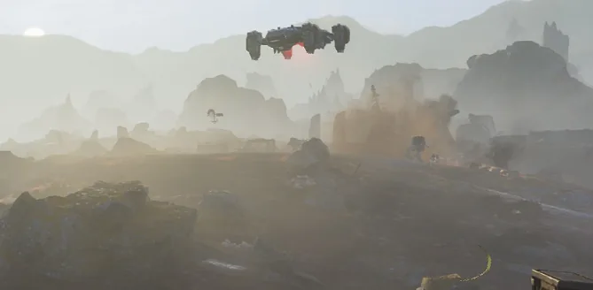
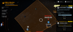
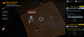
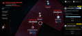
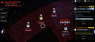

马塔尔/战役
第一次玛塔尔战役
| First Battle of Martale | |
|---|---|
| 阵营 | |
| Start Date | April 11th |
| End Date | April 12th |
| 行星 | Martale |
| 操作 | |
| Group | |
| Casualties | 5 million 绝地潜兵 K.I.A. |
| 重要指令 | 相关 |
| Summary | 防御 failed. 机器人 advanced deeper into Andromeda 分区. |
背景
The 机器人 brutally conquered Matar Bay and launched an 入侵 on Martale and Marfark.
战略与重要性
The first battle of Martale wasn't particularly 重要. The only significant aspect of this battle was the 重要指令, as a successful 防御 would 贡献 to the 重要指令's success.
战斗
战斗始于4月11日，以玛塔陷落开始。
Around 5 million 绝地潜兵 died during this battle. Martale was lost.
第二次玛塔尔战役
| Second Battle of Martale | |
|---|---|
| 阵营 | |
| Start Date | Apr. 12th |
| End Date | Apr. 19th |
| 行星 | Martale |
| 操作 | |
| Group | |
| Casualties | Around 24 million 绝地潜兵 KI.A. |
| 重要指令 | 否 |
| Summary | Martale ended up being at 90% 解放 when Martale Gambit started. |
背景
On April 12th 机器人 captured Martale. This once beautiful had to be liberated.
战略与重要性
Second Battle of Martale was a key battle, as liberating Martale would help in further 进攻型 in Andromeda 分区.
战斗
战斗始于4月12日，当时玛尔特被机器人占领。
战斗于4月19日结束，当时玛尔特计谋开始。
纪念画廊

玛塔尔Gambit
| Martale Gambit | |
|---|---|
| 阵营 | |
| Start Date | Apr. 19th |
| End Date | Apr. 20th |
| 行星 | Martale |
| 操作 | |
| Group | 防御 on Two Fronts |
| Casualties | Around 3 million 绝地潜兵 K.I.A. |
| 重要指令 | 相关 |
| Summary | Gambit failed. Charon Prime conquered by 机器人, Martale was cut off, all the progress from second battle of Martale was lost. |
The Martale Gambit was a battle 策略 created by the community during the 防御 on Two Fronts 重要指令.
背景
The 防御 on Two Fronts 重要指令 instructed the 绝地潜兵 to defend planets on both the 终结族 and 机器人 正面, successfully defending a total of 10 of them over the five day span of the order. The moment the order began, the 终结族 sent a large scale attacking force to Estanu and Oshaune. At the same time, the 机器人 sent 攻击 forces to Charon Prime, Marfark, and Lesath.
The community immediately realized that there was 否 way they were going to be able to successfully defend five planets at the same time, so they devised what is now known as the Martale Gambit to 增加 their chances of success. It was determined that the only Supply Line to Charon Prime able to be utilized by the 机器人 was from Martale, which was close to 解放 when the 重要指令 began. The community decided that instead of trying to defend Charon prime as well as the other four planets, they would cut off the enemy from their 物资 by capturing Martale.
战斗
战斗始于4月19日，该计谋也标志着第二次玛尔特之战的结束。
Around 3 million 绝地潜兵 died during Martale Gambit. The gambit ended with a devastating defeat, Martale was cut off, Charon Prime was captured by 机器人 and the whole Andromeda 分区 was captured by 机器人.
官方Discord支持
The Martale Gambit caused the discovery of an interesting flaw in the 当前 version of 绝地潜兵 2. It was stated by the 官员 Discord that in its 当前 state, cutting off a 行星 from its 物资 doesn't 实际上 cause that 行星 to be secured. However, The developers have stated that this functionality is something they intend to add in the near future, and for the time being are willing to perform the 机械师 manually when it comes into play.
This notice was given to the player base in the form of a Discord post within the 官员 绝地潜兵 Discord 星系战争 频道. This notice also gave 玩家 another avenue of discovering that the Martale Gambit existed, and resulted in a larger playerbase aiding the effort. This is one of the first instances of the 官员 Discord taking note and officially acknowledging a community-created effort.
玛塔尔Gambit画廊
- 公告 addressing the Martale Gambit from the 官员 绝地潜兵 Discord server

Initial state of the Mirin 分区
Initial state of the Draco 分区
Initial state of the Andromeda 分区
Initial state of the Lacaille 分区
第四次玛塔尔战役
WIP